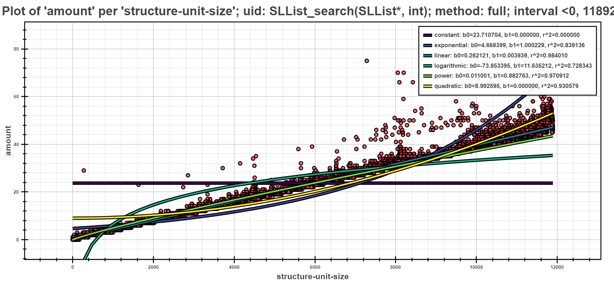
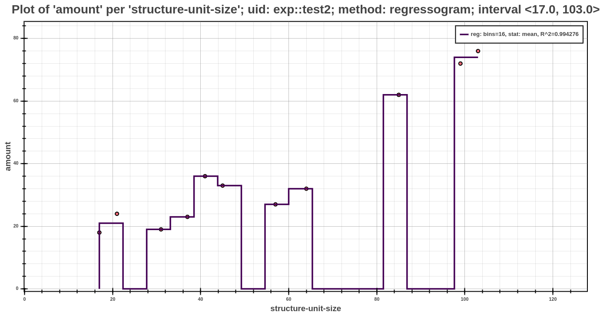
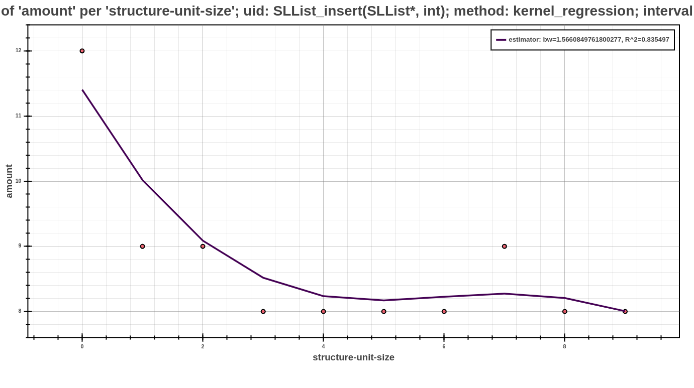

Postprocessors Overview¶
Performance profiles originate either from the user’s own means (i.e. by building their own collectors and generating the profiles w.r.t Specification of Profile Format) or using one of the collectors from Perun’s tool suite.
Perun can postprocess such profiling data in two ways:
By Directly running postprocessors through
perun postprocessbycommand, that takes the profile (either stored or pending) and uses a single postprocessor with given configuration.By Using job specification either as a single run of batch of profiling jobs using
perun run jobor according to the specification of the so called job matrix usingperun run matrixcommand.
The format of input and resulting profiles has to be w.r.t.
Specification of Profile Format. By default new profiles are created. The origin
set to the origin of the original profile. Further, postprocessors is
extended with configuration of the run postprocessor (appended at the end).
All of the postprocessed profiles are stored in the .perun/jobs/ directory
as a file with the .perf extension. The filename is by default
automatically generated according to the following template:
bin-collector-workload-timestamp.perf
Profiles can be further registered and stored in persistent storage using
perun add command. Then both stored and pending profiles (i.e. those not
yet assigned) can be interpreted using available interpretation techniques
using perun show. Refer to Command Line Interface and Visualizations Overview for more details
about running command line commands and capabilities fo interpretation
techniques respectively. Internals of perun storage is described in
Perun Internals.

Supported Postprocessors¶
Perun’s tool suite currently contains the following five postprocessors:
Normalizer Postprocessor scales the resources of the given profile to the interval (0, 1). The main intuition behind the usage of this postprocessor is to be able to compare profiles from different workloads or parameters, which may have different scales of resource amounts.
Regression Analysis (authored by Jirka Pavela) attempts to do a regression analysis by finding the fitting model for dependent variable based on other independent one. Currently the postprocessor focuses on finding a well suited model (linear, quadratic, logarithmic, etc.) for the amount of time duration depending on size of the data structure the function operates on.
Clusterizer tries to classify resources to uniquely identified clusters, which can be used for further postprocessing (e.g. by regression analysis) or to group similar amounts of resources.
Regressogram method (authored by Simon Stupinsky) also known as the binning approach, is the simplest non-parametric estimator. This method trying to fit models through data by dividing the interval into N equal-width bucket and the resultant value in each bucket is equal to result of selected statistical aggregation function (mean/median) within the values in the relevant bucket. In short, we can describe the regressogram as a step function (i.e. constant function by parts).
Moving Average Methods (authored by Simon Stupinsky) also know as the rolling average or running average, is the statistical analysis belongs to non-parametric approaches. This method is based on the analysis of the given data points by creating a series of values based on the specific aggregation function, most often average or possibly median. The resulting values are derived from the different subsets of the full data set. We currently support the two main methods of this approach and that the Simple Moving Average and the Exponential Moving Average. In the first method is an available selection from two aggregation function: mean or median.
All of the listed postprocessors can be run from command line. For more information about command line interface for individual postprocessors refer to Postprocess units.
Postprocessors modules are implementation independent and only requires a simple python interface registered within Perun. For brief tutorial how to create and register your own postprocessors refer to Creating your own Postprocessor.
Normalizer Postprocessor¶
Normalizer is a simple postprocessor that normalizes the values.
Command Line Interface¶
perun postprocessby normalizer¶
Normalizes performance profile into flat interval.
Normalizer is a postprocessor, which iterates through all of the snapshots
and normalizes the resources of same type to interval (0, 1), where
1 corresponds to the maximal value of the given type.
Consider the following list of resources for one snapshot generated by Time Collector:
[
{
'amount': 0.59,
'uid': 'sys'
}, {
'amount': 0.32,
'uid': 'user'
}, {
'amount': 2.32,
'uid': 'real'
}
]
Normalizer yields the following set of resources:
[
{
'amount': 0.2543103448275862,
'uid': 'sys'
}, {
'amount': 0.13793103448275865,
'uid': 'user'
}, {
'amount': 1.0,
'uid': 'real'
}
]
Refer to Normalizer Postprocessor for more thorough description and examples of normalizer postprocessor.
perun postprocessby normalizer [OPTIONS]
Regression Analysis¶
Postprocessing of input profiles using the regression analysis. The regression analysis offers several computational methods and models for finding fitting models for trends in the captured profiling resources.
Command Line Interface¶
perun postprocessby regression_analysis¶
Finds fitting regression models to estimate models of profiled resources.
Regression analyzer tries to find a fitting model to estimate the amount of resources depending on structural-unit-size.
The following strategies are currently available:
Full Computation uses all of the data points to obtain the best fitting model for each type of model from the database (unless
--regression_models/-rrestrict the set of models)Iterative Computation uses a percentage of data points to obtain some preliminary models together with their errors or fitness. The most fitting model is then expanded, until it is fully computed or some other model becomes more fitting.
Full Computation with initial estimate first uses some percent of data to estimate which model would be best fitting. Given model is then fully computed.
Interval Analysis uses more finer set of intervals of data and estimates models for each interval providing more precise modeling of the profile.
Bisection Analysis fully computes the models for full interval. Then it does a split of the interval and computes new models for them. If the best fitting models changed for sub intervals, then we continue with the splitting.
Currently we support linear, quadratic, power, logaritmic and constant models and use the coeficient of determination (\(R^2\)) to measure the fitness of model. The models are stored as follows:
{
"uid": "SLList_insert(SLList*, int)",
"r_square": 0.0017560012128507133,
"coeffs": [
{
"value": 0.505375215875552,
"name": "b0"
},
{
"value": 9.935159839322705e-06,
"name": "b1"
}
],
"x_start": 0,
"x_end": 11892,
"model": "linear",
"method": "full",
}
Note that if your data are not suitable for regression analysis, check out Clusterizer to postprocess your profile to be analysable by this analysis.
For more details about regression analysis refer to Regression Analysis. For more details how to collect suitable resources refer to Trace Collector.
perun postprocessby regression_analysis [OPTIONS]
Options
- -m, --method <method>¶
Required Will use the <method> to find the best fitting models for the given profile.
- Options:
full | iterative | interval | initial_guess | bisection
- -r, --regression_models <regression_models>¶
Restricts the list of regression models used by the specified <method> to fit the data. If omitted, all regression models will be used in the computation.
- Options:
all | constant | exponential | linear | logarithmic | power | quadratic
- -s, --steps <steps>¶
Restricts the number of number of steps / data parts used by the iterative, interval and initial guess methods
- -dp, --depending-on <depending_on>¶
Sets the key that will be used as a source of independent variable.
- -o, --of <of_resource_key>¶
Sets key for which we are finding the model.
Examples¶
1{
2 "resources": {
3 "SLList_insert(SLList*, int)#0": {
4 "amount": [
5 1, 0, 1, 1
6 ],
7 "structure-unit-size": [
8 0, 1, 2, 3
9 ]
10 },
11 "SLList_destroy(SLList*)#0": {
12 "amount": [
13 1
14 ],
15 "structure-unit-size": [
16 4
17 ]
18 },
19 "SLList_init(SLList*)#0": {
20 "amount": [
21 6
22 ],
23 "structure-unit-size": [
24 0
25 ]
26 },
27 "SLList_search(SLList*, int)#0": {
28 "amount": [
29 0
30 ],
31 "structure-unit-size": [
32 0
33 ]
34 }
35 },
36 "header": {
37 "workload": "",
38 "type": "mixed",
39 "units": {
40 "mixed(time delta)": "us"
41 },
42 "params": "",
43 "cmd": "../stap-collector/tst"
44 },
45 "models": [
46 {
47 "coeffs": [
48 {
49 "value": 0.75,
50 "name": "b0"
51 },
52 {
53 "value": 0.0,
54 "name": "b1"
55 }
56 ],
57 "method": "full",
58 "r_square": 0.0,
59 "model": "constant",
60 "uid": "SLList_insert(SLList*, int)",
61 "x_interval_end": 3,
62 "x_interval_start": 0
63 },
64 {
65 "coeffs": [
66 {
67 "value": 1.0,
68 "name": "b0"
69 },
70 {
71 "value": 1.0,
72 "name": "b1"
73 }
74 ],
75 "method": "full",
76 "r_square": 0.0,
77 "model": "exponential",
78 "uid": "SLList_insert(SLList*, int)",
79 "x_interval_end": 3,
80 "x_interval_start": 0
81 },
82 {
83 "coeffs": [
84 {
85 "value": 0.6,
86 "name": "b0"
87 },
88 {
89 "value": 0.1,
90 "name": "b1"
91 }
92 ],
93 "method": "full",
94 "r_square": 0.06666666666666667,
95 "model": "linear",
96 "uid": "SLList_insert(SLList*, int)",
97 "x_interval_end": 3,
98 "x_interval_start": 0
99 },
100 {
101 "coeffs": [
102 {
103 "value": 0.08877935258260898,
104 "name": "b0"
105 },
106 {
107 "value": 0.9675751528184126,
108 "name": "b1"
109 }
110 ],
111 "method": "full",
112 "r_square": 0.8668309711260865,
113 "model": "logarithmic",
114 "uid": "SLList_insert(SLList*, int)",
115 "x_interval_end": 3,
116 "x_interval_start": 0
117 },
118 {
119 "coeffs": [
120 {
121 "value": 1.0,
122 "name": "b0"
123 },
124 {
125 "value": 0.0,
126 "name": "b1"
127 }
128 ],
129 "method": "full",
130 "r_square": 0.0,
131 "model": "power",
132 "uid": "SLList_insert(SLList*, int)",
133 "x_interval_end": 3,
134 "x_interval_start": 0
135 },
136 {
137 "coeffs": [
138 {
139 "value": 0.5714285714285714,
140 "name": "b0"
141 },
142 {
143 "value": 0.05102040816326531,
144 "name": "b1"
145 }
146 ],
147 "method": "full",
148 "r_square": 0.17006802721088435,
149 "model": "quadratic",
150 "uid": "SLList_insert(SLList*, int)",
151 "x_interval_end": 3,
152 "x_interval_start": 0
153 }
154 ],
155 "collector_info": {
156 "params": {
157 "global_sampling": null,
158 "sampling": [
159 {
160 "func": "SLList_insert",
161 "sample": 1
162 },
163 {
164 "func": "func1",
165 "sample": 1
166 }
167 ],
168 "rules": [
169 "SLList_init",
170 "SLList_insert",
171 "SLList_search",
172 "SLList_destroy"
173 ],
174 "method": "custom"
175 },
176 "name": "complexity"
177 },
178 "resource_type_map": {
179 "SLList_insert(SLList*, int)#0": {
180 "subtype": "time delta",
181 "uid": "SLList_insert(SLList*, int)",
182 "time": "6.8e-05s",
183 "type": "mixed"
184 },
185 "SLList_destroy(SLList*)#0": {
186 "subtype": "time delta",
187 "uid": "SLList_destroy(SLList*)",
188 "time": "6.8e-05s",
189 "type": "mixed"
190 },
191 "SLList_init(SLList*)#0": {
192 "subtype": "time delta",
193 "uid": "SLList_init(SLList*)",
194 "time": "6.8e-05s",
195 "type": "mixed"
196 },
197 "SLList_search(SLList*, int)#0": {
198 "subtype": "time delta",
199 "uid": "SLList_search(SLList*, int)",
200 "time": "6.8e-05s",
201 "type": "mixed"
202 }
203 },
204 "postprocessors": [],
205 "origin": "f7f3dcea69b97f2b03c421a223a770917149cfae"
206}
The profile above shows the complexity profile taken from Examples and postprocessed using the full method. The highlighted part shows all of the fully computed models of form \(y = b_0 + b_1*f(x)\), represented by their types (e.g. linear, quadratic, etc.), concrete found coeficients \(b_0\) and \(b_1\) and e.g. coeficient of determination \(R^2\) for measuring the fitting of the model.
The Scatter Plot above shows the interpreted models of different complexity example, computed using the full computation method. In the picture, one can see that the depedency of running time based on the structural size is best fitted by linear models.

The next scatter plot displays the same data as previous, but regressed using the initial guess strategy. This strategy first does a computation of all models on small sample of data points. Such computation yields initial estimate of fitness of models (the initial sample is selected by random). The best fitted model is then chosen and fully computed on the rest of the data points.
The picture shows only one model, namely linear which was fully computed to best fit the given data points. The rest of the models had worse estimation and hence was not computed at all.
Clusterizer¶
A postprocessor that attempts to classify resources to clusters.
The main usage of this postprocessors is to prepare any kind of profile for further postprocessing, mainly by Regression Analysis. The clusterization is either realized w.r.t the sorted order of the resources or sliding window, with parametric width and height.
Command Line Interface¶
perun postprocessby clusterizer¶
Clusters each resource to an appropriate cluster in order to be postprocessable by regression analysis.
Clusterizer tries to find a suitable cluster for each resource in the profile. The clusters are either computed w.r.t the sort order of the resource amounts, or are computed according to the sliding window.
The sliding window can be further adjusted by setting its width (i.e. how many near values on the x axis will we fit to a cluster) and its height (i.e. how big of an interval of resource amounts will be consider for one cluster). Both width and height can be further augmented. Width can either be absolute, where we take in maximum the absolute number of resources, relative, where we take in maximum the percentage of number of resources for each cluster, or weighted, where we take the number of resource depending on the frequency of their occurrences. Similarly, the height can either be absolute, where we set the interval of amounts to an absolute size, or relative, where we set the interval of amounts relative to the to the first resource amount in the cluster (so e.g. if we have window of height 0.1 and the first resource in the cluster has amount of 100, we will cluster every resources in interval 100 to 110 to this cluster).
For more details about regression analysis refer to Clusterizer.
perun postprocessby clusterizer [OPTIONS]
Options
- -s, --strategy <strategy>¶
Specifies the clustering strategy, that will be applied for the profile
- Options:
sort_order | sliding_window
- -wh, --window-height <window_height>¶
Specifies the height of the window (either fixed or proportional)
- -rwh, --relative-window-height¶
Specifies that the height of the window is relative to the point
- -fwh, --fixed-window-height¶
Specifies that the height of the window is absolute to the point
- -ww, --window-width <window_width>¶
Specifies the width of the window, i.e. how many values will be taken by window.
- -rww, --relative-window-width¶
Specifies whether the width of the window is weighted or fixed
- -fww, --fixed-window-width¶
Specifies whether the width of the window is weighted or fixed
- -www, --weighted-window-width¶
Specifies whether the width of the window is weighted or fixed
Examples¶
1{
2 "snapshots": [
3 {
4 "time": "5.000000",
5 "resources": [
6 {
7 "amount": 0,
8 "trace": [
9 {
10 "line": 0,
11 "function": "malloc",
12 "source": "unreachable"
13 },
14 {
15 "line": 21,
16 "function": "main",
17 "source": "../memory_collect_test.c"
18 },
19 {
20 "line": 0,
21 "function": "__libc_start_main",
22 "source": "unreachable"
23 },
24 {
25 "line": 0,
26 "function": "_start",
27 "source": "unreachable"
28 }
29 ],
30 "address": 31584848,
31 "uid": "../memory_collect_test.c:main#22",
32 "cluster": 1,
33 "type": "memory",
34 "subtype": "malloc"
35 },
36 ]
37 }
38 ]
39}
The profile above shows an example of profile postprocessed by clusterizer (note that this is only
an excerpt of the whole profile). Each resource is annotated by a new field named cluster,
which can be used in further interpretation of the profiles (either by Bars Plot,
Scatter Plot or Regression Analysis).

The Scatter Plot above shows the memory profile of a simple example, which randomly allocates memory with linear dependency and was collected by Memory Collector. Since Memory Collector does not collect any other information, but memory rallocation records. Such profile cannot be used to infer any models. However the Scatter Plot above was postprocessed by clusterizer and hence, we can plot the dependency of amount of allocated memory per each cluster. The Scatter Plot itself ephasize the linear dependency of allocated memory depending on some unknown parameters (here represented by cluster).
We can use Regression Analysis to prove our assumption, and on the plot below we can see that the best model for the amount of allocated memory depending on clusters is indeed linear.

Regressogram method¶
Postprocessing of input profiles using the non-parametric method: regressogram. This method serves for finding fitting models for trends in the captured profiling resources using the constant function at the individual parts of the whole interval.
Command Line Interface¶
perun postprocessby regressogram¶
Execution of the interleaving of profiled resources by regressogram models.
Regressogram belongs to the simplest non-parametric methods and its properties are the following:
Regressogram: can be described such as step function (i.e. constant function by parts). Regressogram uses the same basic idea as a histogram for density estimate. This idea is in dividing the set of values of the x-coordinates (<per_key>) into intervals and the estimate of the point in concrete interval takes the mean/median of the y-coordinates (<of_resource_key>), respectively of its value on this sub-interval. We currently use the coefficient of determination (\(R^2\)) to measure the fitness of regressogram. The fitness of estimation of regressogram model depends primarily on the number of buckets into which the interval will be divided. The user can choose number of buckets manually (<bucket_window>) or use one of the following methods to estimate the optimal number of buckets (<bucket_method>):
- sqrt: square root (of data size) estimator, used for its speed and simplicity- rice: does not take variability into account, only data size and commonly overestimates- scott: takes into account data variability and data size, less robust estimator- stone: based on leave-one-out cross validation estimate of the integrated squared error- fd: robust, takes into account data variability and data size, resilient to outliers- sturges: only accounts for data size, underestimates for large non-gaussian data- doane: generalization of Sturges’ formula, works better with non-gaussian data- auto: max of the Sturges’ and ‘fd’ estimators, provides good all around performanceFor more details about these methods to estimate the optimal number of buckets or to view the code of these methods, you can visit SciPy.
For more details about this approach of non-parametric analysis refer to Regressogram method.
perun postprocessby regressogram [OPTIONS]
Options
- -bn, --bucket_number <bucket_number>¶
Restricts the number of buckets to which will be placed the values of the selected statistics.
- -bm, --bucket_method <bucket_method>¶
Specifies the method to estimate the optimal number of buckets.
- Options:
auto | doane | fd | rice | scott | sqrt | sturges
- -sf, --statistic_function <statistic_function>¶
Will use the <statistic_function> to compute the values for points within each bucket of regressogram.
- Options:
mean | median
- -of, --of-key <of_resource_key>¶
Sets key for which we are finding the model (y-coordinates).
- -per, --per-key <per_resource_key>¶
Sets the key that will be used as a source variable (x-coordinates).
Examples¶
{ "bucket_stats": [ 13.0, 25.5 ], "uid": "linear::test2", "bucket_method": "doane", "method": "regressogram", "r_square": 0.7575757575757576, "x_end": 9.0, "statistic_function": "mean", "x_start": 0.0 }
The example above shows an example of profile post-processed by regressogram method (note that this is only an excerpt of the whole profile). Each such model of shows the computed values in the individual buckets, that are represented by bucket_stats. The next value in this example is statistic_function, which represented the statistic to compute the value in each bucket. Further contains the name of the method (bucket_method) by which was calculated the optimal number of buckets, in this case specifically computed with Doanes formula, and coefficient of determination (\(R^2\)) for measuring the fitting of the model. Each such model can be used in the further interpretation of the models (either by Scatter Plot or Average Amount Threshold).
The Scatter Plot above shows the interpreted model, computed using the regressogram method. In the picture, one can see that the dependency of running time based on the structural size is best fitted by exponential models.
Moving Average Methods¶
Postprocessing of input profiles using the non-parametric method: moving average. This method serves to analyze data points in the captured profiling resources by creating a series of averages, eventually medians, of different subsets of the full data set.
Command Line Interface¶
perun postprocessby moving_average¶
Execution of the interleaving of profiled resources by moving average models.
Moving average methods are the natural generalizations of regressogram method. This method uses the local averages/medians of y-coordinates (<of_resource_key>), but the estimate in the x-point (<per_key>) is based on the centered surroundings of this points, more precisely:
Moving Average: is a widely used estimator in the technical analysis, that helps smooth the dataset by filtering out the ‘noise’. Among the basic properties of this methods belongs the ability to reduce the effect of temporary variations in data, better improvement of the fitness of data to a line, so called smoothing, to show the data’s trend more clearly and highlight any value below or above the trend. The most important task with this type of non-parametric approach is the choice of the <window-width>. If the user does not choose it, we try approximate this value by using the value of coefficient of determination (\(R^2\)). At the begin of the analysis is set the initial value of window width and then follows the interleaving of the current dataset, which runs until the value of coefficient of determination will not reach the required level. By this way is guaranteed the desired smoothness of the resulting models. The two basic and commonly used <moving-methods> are the simple moving average (sma) and the exponential moving average (ema).
For more details about this approach of non-parametric analysis refer to Moving Average Methods.
perun postprocessby moving_average [OPTIONS] COMMAND [ARGS]...
Options
- -mp, --min_periods <min_periods>¶
Provides the minimum number of observations in window required to have a value. If the number of possible observations smaller then result is NaN.
- -of, --of-key <of_resource_key>¶
Sets key for which we are finding the model (y-coordinates).
- -per, --per-key <per_resource_key>¶
Sets the key that will be used as a source variable (x-coordinates).
Commands
- ema
Exponential Moving Average
- sma
Simple Moving Average
- smm
Simple Moving Median
perun postprocessby moving_average sma¶
Simple Moving Average
In the most of cases, it is an unweighted Moving Average, this means that the each x-coordinate in the data set (profiled resources) has equal importance and is weighted equally. Then the mean is computed from the previous n data (<no-center>), where the n marks <window-width>. However, in science and engineering the mean is normally taken from an equal number of data on either side of a central value (<center>). This ensures that variations in the mean are aligned with the variations in the mean are aligned with variations in the data rather than being shifted in the x-axis direction. Since the window at the boundaries of the interval does not contain enough count of points usually, it is necessary to specify the value of <min-periods> to avoid the NaN result. The role of the weighted function in this approach belongs to <window-type>, which represents the suite of the following window functions for filtering:
- boxcar: known as rectangular or Dirichlet window, is equivalent to no window at all: –- triang: standard triangular window- blackman: formed by using three terms of a summation of cosines, minimal leakage, close to optimal- hamming: formed by using a raised cosine with non-zero endpoints, minimize the nearest side lobe- bartlett: similar to triangular, endpoints are at zero, processing of tapering data sets- parzen: can be regarded as a generalization of k-nearest neighbor techniques- bohman: convolution of two half-duration cosine lobes- blackmanharris: minimum in the sense that its maximum side lobes are minimized (symmetric 4-term)- nuttall: minimum 4-term Blackman-Harris window according to Nuttall (so called ‘Nuttall4c’)- barthann: has a main lobe at the origin and asymptotically decaying side lobes on both sides- kaiser: formed by using a Bessel function, needs beta value (set to 14 - good starting point)For more details about this window functions or for their visual view you can see SciPyWindow.
perun postprocessby moving_average sma [OPTIONS]
Options
- -wt, --window_type <window_type>¶
Provides the window type, if not set then all points are evenly weighted. For further information about window types see the notes in the documentation.
- Options:
boxcar | triang | blackman | hamming | bartlett | parzen | bohman | blackmanharris | nuttall | barthann
- --center, --no-center¶
If set to False, the result is set to the right edge of the window, else is result set to the center of the window
- -ww, --window_width <window_width>¶
Size of the moving window. This is a number of observations used for calculating the statistic. Each window will be a fixed size.
perun postprocessby moving_average smm¶
Simple Moving Median
The second representative of Simple Moving Average methods is the Simple Moving Median. For this method are applicable to the same rules like in the first described method, except for the option for choosing the window type, which do not make sense in this approach. The only difference between these two methods are the way of computation the values in the individual sub-intervals. Simple Moving Median is not based on the computation of average, but as the name suggests, it based on the median.
perun postprocessby moving_average smm [OPTIONS]
Options
- --center, --no-center¶
If set to False, the result is set to the right edge of the window, else is result set to the center of the window
- -ww, --window_width <window_width>¶
Size of the moving window. This is a number of observations used for calculating the statistic. Each window will be a fixed size.
perun postprocessby moving_average ema¶
Exponential Moving Average
This method is a type of moving average methods, also know as Exponential Weighted Moving Average, that places a greater weight and significance on the most recent data points. The weighting for each far x-coordinate decreases exponentially and never reaching zero. This approach of moving average reacts more significantly to recent changes than a Simple Moving Average, which applies an equal weight to all observations in the period. To calculate an EMA must be first computing the Simple Moving Average (SMA) over a particular sub-interval. In the next step must be calculated the multiplier for smoothing (weighting) the EMA, which depends on the selected formula, the following options are supported (<decay>):
- com: specify decay in terms of center of mass: \({\alpha}\) = 1 / (1 + com), for com >= 0- span: specify decay in terms of span: \({\alpha}\) = 2 / (span + 1), for span >= 1- halflife: specify decay in terms of half-life, \({\alpha}\) = 1 - exp(log(0.5) / halflife), for halflife > 0- alpha: specify smoothing factor \({\alpha}\) directly: 0 < \({\alpha}\) <= 1
The computed coefficient \({\alpha}\) represents the degree of weighting decrease, a constant smoothing factor, The higher value of \({\alpha}\) discounts older observations faster, the small value to the contrary. Finally, to calculate the current value of EMA is used the relevant formula. It is important do not confuse Exponential Moving Average with Simple Moving Average. An Exponential Moving Average behaves quite differently from the second mentioned method, because it is the function of weighting factor or length of the average.
perun postprocessby moving_average ema [OPTIONS]
Options
- -d, --decay <decay>¶
Exactly one of “com”, “span”, “halflife”, “alpha” can be provided. Allowed values and relationship between the parameters are specified in the documentation (e.g. –decay=com 3).
Examples¶
{ "bucket_stats": [ 0.0, 3.0, 24.0, 81.0, 192.0, 375.0 ], "per_key": "structure-unit-size", "uid": "pow::test3", "x_end": 5, "r_square": 1.0, "method": "moving_average", "moving_method": "sma", "x_start": 0, "window_width": 1 }
The example above shows an example of profile post-processed by moving average postprocessor (note that this in only an excerpt of the whole profile). Each such model of moving average model shows the computed values, that are represented by bucket_stats. The important role has value moving_method, that represents the method, which was used to create this model. In this field may be one from the following shortcuts SMA, SMM, EMA, which represents above described methods. The value r_square serves to assess the suitability of the model and represents the coefficient of determination (\(R^2\)). Another significant value in the context of the information about the moving average models is the window_width. This value represents the width of the window, that was used at creating this model. Since each model can be used in the further interpretation (either by Scatter Plot or Average Amount Threshold), another values have auxiliary character and serves for a different purposes at its interpretation. Additional values that contain the information about postprocess parameters can be found in the whole profile, specifically in the part about used post-processors.

The Scatter Plot above shows the interpreted model, computed using the exponential moving average method, running with default values of parameters. In the picture, one can see that the dependency of running time based on the structural size is best fitted by exponential models.
Kernel Regression Methods¶
A postprocessor that executing the kernel regression over the resources.
Postprocessing of inputs profiles using the kernel regression. Postprocessor, implementing kernel regression offers several computational methods with different approaches and different strategies to find optimal parameters.
Command Line Interface¶
perun postprocessby kernel-regression¶
Execution of the interleaving of profiles resources by kernel models.
In statistics, the kernel regression is a non-parametric approach to estimate the conditional expectation of a random variable. Generally, the main goal of this approach is to find non-parametric relation between a pair of random variables X <per-key> and Y <of-key>. Different from parametric techniques (e.g. linear regression), kernel regression does not assume any underlying distribution (e.g. linear, exponential, etc.) to estimate the regression function. The main idea of kernel regression is putting the kernel, that have the role of weighted function, to each observation point in the dataset. Subsequently, the kernel will assign weight to each point in depends on the distance from the current data point. The kernel basis formula depends only to the bandwidth from the current (‘local’) data point X to a set of neighboring data points X.
Kernel Selection does not important from an asymptotic point of view. It is appropriate to choose the optimal kernel since this group of the kernels are continuously on the whole definition field and then the estimated regression function inherit smoothness of the kernel. For example, a suitable kernels can be the epanechnikov or normal kernel. This postprocessor offers the kernel selection in the kernel-smoothing mode, where are available five different types of kernels. For more information about these kernels or this kernel regression mode you can see perun postprocessby kernel-regression kernel-smoothing.
Bandwidth Selection is the most important factor at each approach of kernel regression, since this value significantly affects the smoothness of the resulting estimate. In case, when is choose the inappropriate value, in the most cases can be expected the following two situations. The small bandwidth value reproduce estimated data and vice versa, the large value leads to over-leaving, so to average of the estimated data. Therefore are used the methods to determine the bandwidth value. One of the most widespread and most commonly used methods is the cross-validation method. This method is based on the estimate of the regression function in which will be omitted i-th observation. In this postprocessor is this method available in the estimator-setting mode. Another methods to determine the bandwidth, which are available in the remaining modes of this postprocessor are scott and silverman method. More information about these methods and its definition you cas see in the part perun postprocessby kernel-regression method-selection.
This postprocessor in summary offers five different modes, which does not differ in the resulting estimate, but in the way of computation the resulting estimate. Better said, it means, that the result of each mode is the kernel estimate with relevant parameters, selected according to the concrete mode. In short we will describe the individual methods, for more information about it, you can visit the relevant parts of documentation:
* Estimator-Settings: Nadaraya-Watson kernel regression with specific settings for estimate* User-Selection: Nadaraya-Watson kernel regression with user bandwidth* Method-Selection: Nadaraya-Watson kernel regression with supporting bandwidth selection method* Kernel-Smoothing: Kernel regression with different types of kernel and regression methods* Kernel-Ridge: Nadaraya-Watson kernel regression with automatic bandwidth selection
For more details about this approach of non-parametric analysis refer to Kernel Regression Methods.
perun postprocessby kernel-regression [OPTIONS] COMMAND [ARGS]...
Options
- -of, --of-key <of_resource_key>¶
Sets key for which we are finding the model (y-coordinates).
- -per, --per-key <per_resource_key>¶
Sets the key that will be used as a source variable (x-coordinates).
Commands
- estimator-settings
Nadaraya-Watson kernel regression with…
- kernel-ridge
Nadaraya-Watson kernel regression with…
- kernel-smoothing
Kernel regression with different types of…
- method-selection
Nadaraya-Watson kernel regression with…
- user-selection
Nadaraya-Watson kernel regression with…
perun postprocessby kernel-regression estimator-settings¶
Nadaraya-Watson kernel regression with specific settings for estimate.
As has been mentioned above, the kernel regression aims to estimate the functional relation between explanatory variable y and the response variable X. This mode of kernel regression postprocessor calculates the conditional mean E[y|X] = m(X), where y = m(X) + \(\epsilon\). Variable X is represented in the postprocessor by <per-key> option and the variable y is represented by <of-key> option.
Regression Estimator <reg-type>:
This mode offer two types of regression estimator <reg-type>. Local Constant (`ll`) type of regression provided by this mode is also known as Nadaraya-Watson kernel regression:
Nadaraya-Watson: expects the following conditional expectation: E[y|X] = m(X), where function m(*) represents the regression function to estimate. Then we can alternatively write the following formula: y = m(X) + \(\epsilon\), E (\(\epsilon\)) = 0. Then we can suppose, that we have the set of independent observations {(\({x_1}\), \({y_1}\)), …, (\({x_n}\), \({y_n}\))} and the Nadaraya-Watson estimator is defined as:
\[m_{h}(x) = \sum_{i=1}^{n}K_h(x - x_i)y_i / \sum_{j=1}^{n}K_h(x - x_j)\]where \({K_h}\) is a kernel with bandwidth h. The denominator is a weighting term with sum 1. It easy to see that this kernel regression estimator is just a weighted sum of the observed responses \({y_i}\). There are many other kernel estimators that are various in compare to this presented estimator. However, since all are asymptotic equivalently, we will not deal with them closer. Kernel Regression postprocessor works in all modes only with Nadaraya-Watson estimator.
The second supported regression estimator in this mode of postprocessor is Local Linear (`lc`). This type is an extension of that which suffers less from bias issues at the edge of the support.
Local Linear: estimator, that offers various advantages compared with other kernel-type estimators, such as the Nadaraya-Watson estimator. More precisely, it adapts to both random and fixed designs, and to various design densities such as highly clustered designs and nearly uniform designs. It turns out that the local linear smoother repairs the drawbacks of other kernel regression estimators. An regression estimator m of m is a linear smoother if, for each x, there is a vector \(l(x) = (l_1(x), ..., l_n(x))^T\) such that:
\[m(x) = \sum_{i=1}^{n}l_i(x)Y_i = l(x)^TY\]where \(Y = (Y_1, ..., Y_n)^T\). For kernel estimators:
\[l_i(x) = K(||x - X_i|| / h) / \sum_{j=1}^{n}K(||x - X_j|| / h)\]where K represents kernel and h its bandwidth.
For a better imagination, there is an interesting fact, that the following estimators are linear smoothers too: Gaussian process regression, splines.
Bandwidth Method <bandwidth-method>:
As has been said in the general description of the kernel regression, once of the most important factors of the resulting estimate is the kernel bandwidth. When the inappropriate value is selected may occur to under-laying or over-laying fo the resulting kernel estimate. Since the bandwidth of the kernel is a free parameter which exhibits a strong influence on the resulting estimate postprocessor offers the method for its selection. Two most popular data-driven methods of bandwidth selection that have desirable properties are least-squares cross-validation (cv_ls) and the AIC-based method of Hurvich et al. (1998), which is based on minimizing a modified Akaike Information Criterion (aic):
Cross-Validation Least-Squares: determination of the optimal kernel bandwidth for kernel regression is based on minimizing
\[CV(h) = n^{-1} \sum_{i=1}^{n}(Y_i - g_{-i}(X_i))^2,\]where \(g_{-i}(X_i)\) is the estimator of \(g(X_i)\) formed by leaving out the i-th observation when generating the prediction for observation i.
Hurvich et al.’s (1998) approach is based on the minimization of
\[AIC_c = ln(\sigma^2) + ((1 + tr(H) / n) / (1 - (tr(H) + 2) / n),\]where
\[\sigma^2 = 1 / n \sum_{i=1}^{n}(Y_i - g(X_i))^2 = Y'(I - H)'(I - H)Y / n\]with \(g(X_i)\) being a non-parametric regression estimator and H being an n x n matrix of kernel weights with its (i, j)-th element given by \(H_{ij} = K_h(X_i, X_j) / \sum_{l=1}^{n} K_h(X_i, X_l)\), where \(K_h(*)\) is a generalized product kernel.
Both methods for kernel bandwidth selection the least-squared cross-validation and the AIC have been shown to be asymptotically equivalent.
The remaining options at this mode of kernel regression postprocessor are described within usage to it and you can see this in the list below. All these options are parameters to EstimatorSettings (see EstimatorSettings), that optimizing the kernel bandwidth based on the these specified settings.
In the case of confusion about this approach of kernel regression, you can visit StatsModels.
perun postprocessby kernel-regression estimator-settings [OPTIONS]
Options
- -rt, --reg-type <reg_type>¶
Provides the type for regression estimator. Supported types are: “lc”: local-constant (Nadaraya-Watson) and “ll”: local-linear estimator. Default is “ll”. For more information about these types you can visit Perun Documentation.
- Options:
ll | lc
- -bw, --bandwidth-method <bandwidth_method>¶
Provides the method for bandwidth selection. Supported values are: “cv-ls”: least-squares cross validation and “aic”: AIC Hurvich bandwidth estimation. Default is “cv-ls”. For more information about these methods you can visit Perun Documentation.
- Options:
cv_ls | aic
- --efficient, --uniformly¶
If True, is executing the efficient bandwidth estimation - by taking smaller sub-samples and estimating the scaling factor of each sub-sample. It is useful for large samples and/or multiple variables. If False (default), all data is used at the same time.
- --randomize, --no-randomize¶
If True, the bandwidth estimation is performed by taking <n_res> random re-samples of size <n-sub-samples> from the full sample. If set to False (default), is performed by slicing the full sample in sub-samples of <n-sub-samples> size, so that all samples are used once.
- -nsub, --n-sub-samples <n_sub_samples>¶
Size of the sub-samples (default is 50).
- -nres, --n-re-samples <n_re_samples>¶
The number of random re-samples used to bandwidth estimation. It has effect only if <randomize> is set to True. Default values is 25.
- --return-median, --return-mean¶
If True, the estimator uses the median of all scaling factors for each sub-sample to estimate bandwidth of the full sample. If False (default), the estimator used the mean.
perun postprocessby kernel-regression user-selection¶
Nadaraya-Watson kernel regression with user bandwidth.
This mode of kernel regression postprocessor is very similar to estimator-settings mode. Also offers two types of regression estimator <reg-type> and that the Nadaraya-Watson estimator, so known as local-constant (lc) and the local-linear estimator (ll). Details about these estimators are available in perun postprocessby kernel-regression estimator-settings. In contrary to this mode, which selected a kernel bandwidth using the EstimatorSettings and chosen parameters, in this mode the user itself selects a kernel bandwidth <bandwidth-value>. This value will be used to execute the kernel regression. The value of kernel bandwidth in the resulting estimate may change occasionally, specifically in the case, when the bandwidth value is too low to execute the kernel regression. Then will be a bandwidth value approximated to the closest appropriate value, so that is not decreased the accuracy of the resulting estimate.
perun postprocessby kernel-regression user-selection [OPTIONS]
Options
- -rt, --reg-type <reg_type>¶
Provides the type for regression estimator. Supported types are: “lc”: local-constant (Nadaraya-Watson) and “ll”: local-linear estimator. Default is “ll”. For more information about these types you can visit Perun Documentation.
- Options:
ll | lc
- -bv, --bandwidth-value <bandwidth_value>¶
Required The float value of <bandwidth> defined by user, which will be used at kernel regression.
perun postprocessby kernel-regression method-selection¶
Nadaraya-Watson kernel regression with supporting bandwidth selection method.
The last method from a group of three methods based on a similar principle. Method-selection mode offers the same type of regression estimators <reg-type> as the first two described methods. The first supported option is ll, which represents the local-linear estimator. Nadaraya-Watson or local constant estimator represents the second option for <reg-type> parameter. The more detailed description of these estimators is located in perun postprocessby kernel-regression estimator-settings. The difference between this mode and the two first modes is in the way of determination of a kernel bandwidth. In this mode are offered two methods to determine bandwidth. These methods try calculated an optimal bandwidth from predefined formulas:
Scotts’s Rule of thumb to determine the smoothing bandwidth for a kernel estimation. It is very fast compute. This rule was designed for density estimation but is usable for kernel regression too. Typically produces a larger bandwidth and therefore it is useful for estimating a gradual trend:
\[bw = 1.059 * A * n^{-1/5},\]where n marks the length of X variable <per-key> and
\[A = min(\sigma(x), IQR(x) / 1.349),\]where \(\sigma\) marks the StandardDeviation and IQR marks the InterquartileRange.
Silverman’s Rule of thumb to determine the smoothing bandwidth for a kernel estimation. Belongs to most popular method which uses the rule-of-thumb. Rule is originally designs for density estimation and therefore uses the normal density as a prior for approximating. For the necessary estimation of the \(\sigma\) of X <per-key> he proposes a robust version making use of the InterquartileRange. If the true density is uni-modal, fairly symmetric and does not have fat tails, it works fine:
\[bw = 0.9 * A * n^{-1/5},\]where n marks the length of X variable <per-key> and
\[A = min(\sigma(x), IQR(x) / 1.349),\]where \(\sigma\) marks the StandardDeviation and IQR marks the InterquartileRange.
perun postprocessby kernel-regression method-selection [OPTIONS]
Options
- -rt, --reg-type <reg_type>¶
Provides the type for regression estimator. Supported types are: “lc”: local-constant (Nadaraya-Watson) and “ll”: local-linear estimator. Default is “ll”. For more information about these types you can visit Perun Documentation.
- Options:
ll | lc
- -bm, --bandwidth-method <bandwidth_method>¶
Provides the helper method to determine the kernel bandwidth. The <method_name> will be used to compute the bandwidth, which will be used at kernel regression.
- Options:
scott | silverman
perun postprocessby kernel-regression kernel-smoothing¶
Kernel regression with different types of kernel and regression methods.
This mode of kernel regression postprocessor implements non-parametric regression using different kernel methods and different kernel types. The calculation in this mode can be split into three parts. The first part is represented by the kernel type, the second part by bandwidth computation and the last part is represented by regression method, which will be used to interleave the given resources. We will look gradually at individual supported options in the each part of computation.
Kernel Type <kernel-type>:
In non-parametric statistics a kernel is a weighting function used in estimation techniques. In kernel regression is used to estimate the conditional expectation of a random variable. As has been said, kernel width must be specified when running a non-parametric estimation. The kernel in view of mathematical definition is a non-negative real-valued integrable function K. For most applications, it is desirable to define the function to satisfy two additional requirements:
Normalization:
\[\int_{-\infty}^{+\infty}K(u)du = 1,\]Symmetry
\[K(-u) = K(u),\]for all values of u. The second requirement ensures that the average of the corresponding distribution is equal to that of the sample used. If K is a kernel, then so is the function \(K^*\) defined by \(K^*(u) = \lambda K (\lambda u)\), where \(\lambda > 0\). This can be used to select a scale that is appropriate for the data. This mode offers several types of kernel functions:
Kernel Name
Kernel Function, K(u)
Efficiency
Gaussian (normal)
\(K(u)=(1/\sqrt{2\pi})e^{-(1/2)u^2}\)
95.1%
Epanechnikov
\(K(u)=3/4(1-u^2)\)
100%
Tricube
\(K(u)=70/81(1-|u^3|)^3\)
99.8%
Gaussian order4
\(\phi_4(u)=1/2(3-u^2)\phi(u)\), where \(\phi\) is the normal kernel
not applicable
Epanechnikov order4
\(K_4(u)=-(15/8)u^2+(9/8)\), where K is the non-normalized Epanechnikov kernel
not applicable
Efficiency is defined as \(\sqrt{\int{}{}u^2K(u)du}\int{}{}K(u)^2du\), and its measured to the Epanechnikov kernel.
Smoothing Method <smoothing-method>:
Kernel-Smoothing mode of this postprocessor offers three different non-parametric regression methods to execute kernel regression. The first of them is called spatial-average and perform a Nadaraya-Watson regression (i.e. also called local-constant regression) on the data using a given kernel:
\[m_{h}(x) = \sum_{i=1}^{n}K_h((x-x_i)/h)y_i/\sum_{j=1}^{n}K_h((x-x_j) / h),\]where K(x) is the kernel and must be such that E(K(x)) = 0 and h is the bandwidth of the method. Local-Constant regression was also described in perun postprocessby kernel-regression estimator-settings. The second supported regression method by this mode is called local-linear. Compared with previous method, which offers computational with different types of kernel, this method has restrictions and perform local-linear regression using only Gaussian (Normal) kernel. The local-constant regression was described in perun postprocessby kernel-regression estimator-settings and therefore will not be given no further attention to it. Local Polynomial regression is the last method in this mode and perform regression in N-D using a user-provided kernel. The local-polynomial regression is the function that minimizes, for each position:
\[m_{h}(x) = \sum_{i=0}^{n}K((x - x_i) / h)(y_i - a_0 - P_q(x_i -x))^2,\]where K(x) is the kernel such that E(K(x)) = 0, q is the order of the fitted polynomial <polynomial-order>, \(P_q(x)\) is a polynomial or order q in x, and h is the bandwidth of the method. The polynomial \(P_q(x)\) is of the form:
\[F_d(k) = { n \in N^d | \sum_{i=1}^{d}n_i = k }\]\[P_q(x_1, ..., x_d) = \sum_{k=1}^{q}{}\sum_{n \in F_d(k)}^{}{} a_{k,n}\prod_{i=1}^{d}x_{i}^{n_i}\]For example we can have:
\[P_2(x, y) = a_{110}x + a_{101}y + a_{220}x^2 + a_{221}xy + a_{202}y^2\]
The last part of the calculation is the bandwidth computation. This mode offers to user enter the value directly with use of parameter <bandwidth-value>. The parameter <bandwidth-method> offers to user the selection from the two methods to determine the optimal bandwidth value. The supported methods are Scotts’s Rule and Silverman’s Rule, which are described in perun postprocessby kernel-regression method-selection. This parameter cannot be entered in combination with <bandwidth-value>, then will be ignored and will be accepted value from <bandwidth-value>.
perun postprocessby kernel-regression kernel-smoothing [OPTIONS]
Options
- -kt, --kernel-type <kernel_type>¶
Provides the set of kernels to execute the kernel-smoothing with kernel selected by the user. For exact definitions of these kernels and more information about it, you can visit the Perun Documentation.
- Options:
epanechnikov | tricube | normal | epanechnikov4 | normal4
- -sm, --smoothing-method <smoothing_method>¶
Provides kernel smoothing methods to executing non-parametric regressions: local-polynomial perform a local-polynomial regression in N-D using a user-provided kernel; local-linear perform a local-linear regression using a gaussian (normal) kernel; and spatial-average perform a Nadaraya-Watson regression on the data (so called local-constant regression) using a user-provided kernel.
- Options:
spatial-average | local-linear | local-polynomial
- -bm, --bandwidth-method <bandwidth_method>¶
Provides the helper method to determine the kernel bandwidth. The <bandwidth_method> will be used to compute the bandwidth, which will be used at kernel-smoothing regression. Cannot be entered in combination with <bandwidth-value>, then will be ignored and will be accepted value from <bandwidth-value>.
- Options:
scott | silverman
- -bv, --bandwidth-value <bandwidth_value>¶
The float value of <bandwidth> defined by user, which will be used at kernel regression. If is entered in the combination with <bandwidth-method>, then method will be ignored.
- -q, --polynomial-order <polynomial_order>¶
Provides order of the polynomial to fit. Default value of the order is equal to 3. Is accepted only by local-polynomial <smoothing-method>, another methods ignoring it.
perun postprocessby kernel-regression kernel-ridge¶
Nadaraya-Watson kernel regression with automatic bandwidth selection.
This mode implements Nadaraya-Watson kernel regression, which was described above in perun postprocessby kernel-regression estimator-settings. While the previous modes provided the methods to determine the optimal bandwidth with different ways, this method provides a little bit different way. From a given range of potential bandwidths <gamma-range> try to select the optimal kernel bandwidth with use of leave-one-out cross-validation. This approach was described in perun postprocessby kernel-regression estimator-settings, where was introduced the least-squares cross- validation and it is a modification of this approach. Leave-one-out cross validation is K-fold cross validation taken to its logical extreme, with K equal to N, the number of data points in the set. The original gamma-range will be divided on the base of size the given step <gamma-step>. The selection of specific value from this range will be executing by minimizing mean-squared-error in leave-one-out cross-validation. The selected bandwidth-value will serves for gaussian kernel in resulting estimate: \(K(x, y) = exp(-gamma * ||x-y||^2)\).
perun postprocessby kernel-regression kernel-ridge [OPTIONS]
Options
- -gr, --gamma-range <gamma_range>¶
Provides the range for automatic bandwidth selection of the kernel via leave-one-out cross-validation. One value from these range will be selected with minimizing the mean-squared error of leave-one-out cross-validation. The first value will be taken as the lower bound of the range and cannot be greater than the second value.
- -gs, --gamma-step <gamma_step>¶
Provides the size of the step, with which will be executed the iteration over the given <gamma-range>. Cannot be greater than length of <gamma-range>, else will be set to value of the lower bound of the <gamma_range>.
Examples¶
{ "per_key": "structure-unit-size", "uid": "quad::test1", "kernel_mode": "estimator", "r_square": 0.9990518378010778, "method": "kernel_regression", "x_start": 10, "bandwidth": 2.672754640321602, "x_end": 64, "kernel_stats": [ 115.6085941489687, 155.95838478107163, 190.27598428091824, 219.36576520977312, 252.80699243117965, 268.4600214673941, 283.3744716372719, 282.7535719770607, 276.27153279181573, 269.69580474542016, 244.451017529157, 226.98819185034756, 180.72465187812492 ] }
The example above shows an example of profile post-processed by kernel regression (note that this is only an excerpt of the whole profile). Each such kernel model shows the values of resulting kernel estimate, that are part of kernel_stats list. Another fascinating value is stored in kernel_mode field and means the relevant mode, which executing the kernel regression over this model. In this field may be one from the following words, which represents the individual modes of kernel regression postprocessor. The value r_square serves to assess the suitability of the kernel model and represents the coefficient of determination (\(R^2\)). In the context of another kernel estimates for decreasing or increasing the resulting accuracy is important the field bandwidth, which represents the kernel bandwidth in the current kernel model. Since each model can be used in the further interpretation (either by Scatter Plot or Average Amount Threshold), another values have auxiliary character and serves for a different purposes at its interpretation. Additional values that contain the information about selected parameters at kernel regression postprocessor and its modes, can be found in the whole profile, specifically in the part about used post-processors.
The Scatter Plot above shows the interpreted model, computed using the kernel regression postprocessor, concretely with default value of parameters in estimator-settings mode of this postprocessor. In the picture, can be see that the dependency of running time based on the structural size.
Creating your own Postprocessor¶
New postprocessors can be registered within Perun in several steps. Internally they can be
implemented in any programming language and in order to work with perun requires one to three
phases to be specified as given in Postprocessors Overview—before(), postprocess()
and after(). Each new postprocessor requires a interface module run.py, which contains the
three function and, moreover, a CLI function for Click framework.
You can register your new postprocessor as follows:
Run
perun utils create postprocess mypostprocessorto generate a new modules inperun/postprocessdirectory with the following structure. The command takes a predefined templates for new postprocessors and creates__init__.pyandrun.pyaccording to the supplied command line arguments (see Utility Commands for more information about interface ofperun utils createcommand):/perun |-- /postprocess |-- /mypostprocessor |-- __init__.py |-- run.py |-- /normalizer |-- /regression_analysis |-- __init__.pyFirst, implement the
__init__pyfile, including the module docstring with brief postprocessor description and definitions of constants that are used for internal checks which has the following structure:1"""...""" 2 3SUPPORTED_PROFILES = ["mixed|memory|time"]
Next, implement the
run.pymodule withpostprocess()fucntion, (and optionally withbefore()andafter()functions). Thepostprocess()function should do the actual postprocessing of the profile. Each function should return the integer status of the phase, the status message (used in case of error) and dictionary including params passed to additional phases and ‘profile’ with dictionary w.r.t. Specification of Profile Format.1def before(**kwargs): 2 """(optional)""" 3 return STATUS, STATUS_MSG, dict(kwargs) 4 5 6def postprocess(profile, **configuration): 7 """...""" 8 return STATUS, STATUS_MSG, dict(kwargs) 9 10 11def after(**kwargs): 12 """(optional)""" 13 return STATUS, STATUS_MSG, dict(kwargs)
Additionally, implement the command line interface function in
run.py, named the same as your collector. This function will be called from the command line asperun postprocessby mypostprocessorand is based on Click_libary.1--- /home/runner/work/perun/perun/docs/_static/templates/postprocess_run.py 2+++ /home/runner/work/perun/perun/docs/_static/templates/postprocess_run_api.py 3@@ -1,3 +1,8 @@ 4+import click 5+ 6+import perun.logic.runner as runner 7+ 8+ 9 def before(**kwargs): 10 """(optional)""" 11 return STATUS, STATUS_MSG, dict(kwargs) 12@@ -11,3 +16,10 @@ 13 def after(**kwargs): 14 """(optional)""" 15 return STATUS, STATUS_MSG, dict(kwargs) 16+ 17+ 18+@click.command() 19+@pass_profile 20+def regression_analysis(profile, **kwargs): 21+ """...""" 22+ runner.run_postprocessor_on_profile(profile, "mypostprocessor", kwargs)
Finally register your newly created module in
get_supported_module_names()located inperun.utils.__init__.py:1--- /home/runner/work/perun/perun/docs/_static/templates/supported_module_names.py 2+++ /home/runner/work/perun/perun/docs/_static/templates/supported_module_names_postprocess.py 3@@ -7,7 +7,12 @@ 4 return { 5 "vcs": ["git"], 6 "collect": ["trace", "memory", "time"], 7- "postprocess": ["filter", "normalizer", "regression-analysis"], 8+ "postprocess": [ 9+ "filter", 10+ "normalizer", 11+ "regression-analysis", 12+ "mypostprocessor", 13+ ], 14 "view": [ 15 "alloclist", 16 "bars",
Preferably, verify that registering did not break anything in the Perun and if you are not using the developer installation, then reinstall Perun:
make test make installAt this point you can start using your postprocessor either using
perun postprocessbyor using the following to set the job matrix and run the batch collection of profiles:perun config --edit perun run matrixIf you think your postprocessor could help others, please, consider making Pull Request.